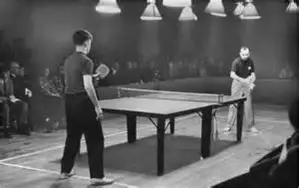
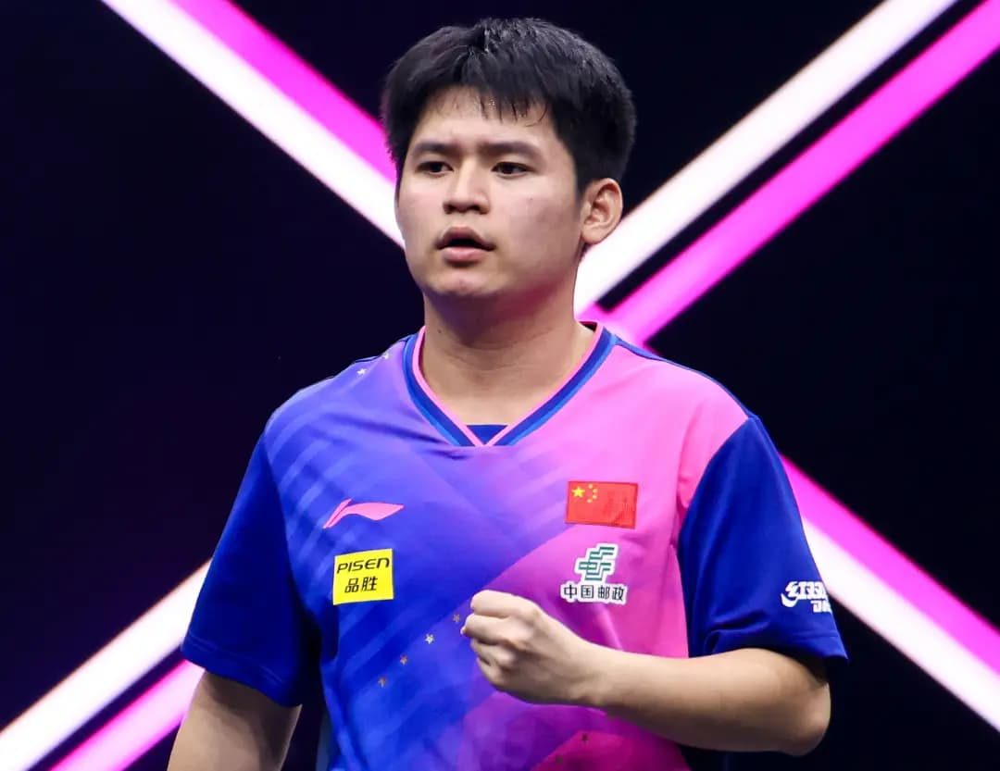
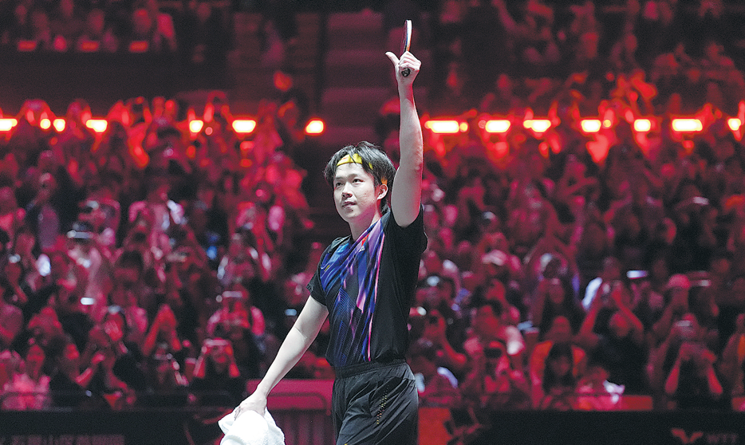
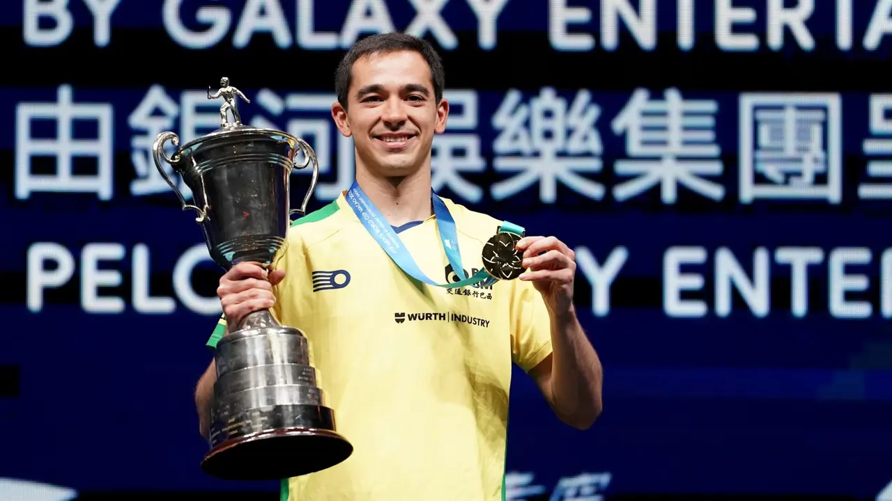

Como foi originado e como funciona o esporte Ping-Pong?
O que é Ping-Pong?
O objetivo é rebater a bola de forma que o adversário
não consiga devolvê-la corretamente.
Pode ser jogado simples(um contra um)
ou em duplas(dois contra dois)
É uma modalidade reconhecida pelo
Comitê Olímpico Internacional (faz parte dos Jogos
Olímpicos desde 1988)
Origem do Tênis de Mesa
O tênis de mesa surgiu na
Inglaterra, no final do século XIX
(por volta de 1880).
Era inicialmente uma versão
improvisada do tênis de campo,
jogada dentro de casa aristocráticas.
Usavam:
Livros empilhados como rede,
Tampa de caixa da charuto como raquete,
Rolhas de champanhe como bolas,
Em 1901, a empresa inglesa J. Jaques
& Son Ltd registrou a marca Ping-
Pong, que depois foi comprada
pela fabricante de brinquedos Parker Brothers

Quais são as regras que devemos seguir para que o esporte funcione?
Como funciona o jogo:
Saque:
O jogo começa com um saque
A bola deve ser lançada para cima, no mínimo 16 cm,
sem efeito ou rotação extra, e batida de forma
que o primeiro toque na mesa do sacador
depois na do adversário
Troca de Bolas:
Após o saque, os jogadores
trocam batidas alternadamente
A bola deve sempre tocar primeiro na mesa do
adversário antes de ser rebatida
A troca continua até que um
dos jogadores cometa um erro
Pontuação:
Marca ponto quem:
Deixa o adversário falhar(não devolver a bola)
Vê a bola do adversário bater fora
da mesa sem tocar na superfície
Receba um saque feito incorretamnete
Faz o adversário tocar nabola
mais de uma vez
"Cada erro equivale a 1 ponto para o adversário
Faltas comuns:
Não lançar a bola corretamente no saque.
Tocar a bola antes de ela quicar (exceto em certos casos, como se estiver fora da mesa).
Encostar na mesa com a mão livre.
Mover ou tocar a rede.
Bater a bola fora da mesa (sem que ela toque no campo adversário).
Ordem do saque:
No início do jogo, sorteia-se quem começa sacando.
O jogador saca duas vezes seguidas, depois o saque passa ao adversário.
Quando o placar empata em 10x10 (deuce), o saque alterna a cada ponto.
Em partidas com múltiplos sets, os jogadores trocando de lado a cada set.
No set decisivo, trocam de lado quando um dos jogadores atinge 5 pontos.
Tipos de efeito na bola:
Jogadores avançados usam efeitos para dificultar a devolução:
Topspin: Bola gira para frente salta mais quando quica.
Backspin: Bola gira para trás tende a cair antes.
Sidespin: Bola gira para os lados desvia a trajetória lateral.
Sem efeito: Mais previsível, fácil de devolver.
Vitória do set e da partida:
Um set vai até 11 pontos, com diferença mínima de 2 pontos
(se ficar 10-10, o jogo segue até alguém abrir 2 pontos de vantagem).
A partida pode ser disputada em melhor de 3, 5 ou 7 sets, dependendo da competição.
Dimensões e equipamentos
Comprimento: 2,74 m
Largura: 1,525 m
Altura: 76 cm
Divisão: uma rede no meio (15,25 cm de altura)
Bola
Diâmetro: 40 mm
Peso: 2,7 g
Material: Plástico (antigamente era celuloide)
Cor: branca ou laranja, dependendo do fundo da sala
Raquete
Geralmente feita de madeira e coberta com borracha
Tem dois lados (vermelho e preto), que podem
ter características diferentes (mais efeito, mais velocidade, etc.)
Top 3 Melhores jogadores de tênis de mesa do mundo
1° Lin Shidong
2° Wang Chuqin
3° Hugo Calderano
Lin Shidong

País: China
Empunhadura: Shakehand
Mão: Direita
Histórico do Ranking: 1º lugar pela primeira vez em 2025
Títulos:
WTT Feeder European Summer Series (2022),
WTT Contender Amman (2023), WTT Contender Almaty (2024),
WTT Champions Macao (2024), WTT China Smash (2024),
WTT Contender Muscat (2024), WTT Champions Frankfurt (2024),
WTT Singapore Smash (2025)
Wang Chuqin

País: China
Empunhadura: Clássica
Mão: Esquerda
Histórico do Ranking: 1º pela primeira vez em 2023
Títulos:
ITTF World Tour (2019), WTT Star Contender (2022, 2023 e 2024), WTT Champions Macau (2022 e 2023),
WTT Cup Finals (2022), WTT Finals (2024), Jogos Asiáticos (2023), Campeonato Mundial de Doha (2025)
Hugo Calderano

País: Brasil
Empunhadura: Clássica
Mão: Direita
Histórico do Ranking: 3º em 2022 e 2025
Títulos Simples:
ITTF World Tour, Americas, Brazil Open (2013), Campeonato Latino-Americano (2014, 2015, 2016),
Jogos Pan-Americanos/Simples (2015, 2019 e 2023), Copa Latino-Americana (2016), Desafio ITTF – Aberto do Brasil (2017),
Campeonato Pan-Americano (2017, 2021, 2022, 2023, 2024), Copa Pan-Americana (2018, 2019, 2020), WTT Star Doha (2021),
WTT Contender Tunis (2022), Contender WTT Durban (2023), WTT Contender Doha (2023), WTT Contender Muscat (2023),
WTT Contender Rio de Janeiro (2024), WTT Star Contender Ljubljana (2024), Copa do Mundo (2025)
Títulos Duplas:
Jogos Pan-Americanos (2019), Swedish Open (2017), Rio de Janeiro Open (2017)
Títulos Equipes:
Jogos Pan-Americanos (2015, 2023), Campeonato Pan-Americano (2017, 2021, 2022, 2023)
Elaborado por Dexter Aquiles